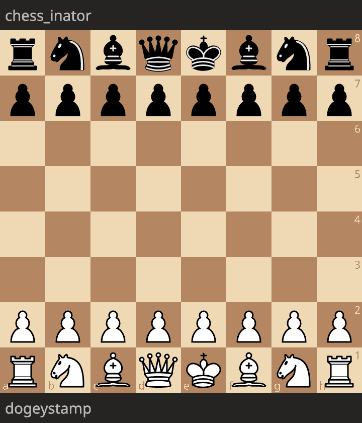

Chess engine, pt. 1: Getting started
This post is part of a series about building a chess-playing engine.
In this part of the series, I go over all the information you need to write a basic chess engine, one that plays random moves. Such an engine is the “hello world” of chess; once you get it to run, adding more features is simple. If you follow along through this entire post, you will be able to play games of chess against your engine. You could even connect your bot to Lichess, where it can play chess online.
The UCI protocol
I’ll start off by explaining the Universal Chess Interface, or UCI.
In computer science, protocols are quite powerful. Once your program implements an interface, or a simple subset of it, it suddenly has a common language to talk to other devices that also implement the protocol. For example, take HTTP; you can implement a server using any language, any hardware. Once you build something that talks HTTP, you can effortlessly expose it to billions of devices on the Web.
The equivalent standard protocol for chess engine programming is UCI. In UCI, there are two parties involved: the GUI, and the engine.
- The GUI keeps track of the chessboard, takes move input from human players, and determines who wins the game.
- The engine plays chess, i.e. given a chess position, it finds the best move.
Because the GUI handles a lot of tasks in UCI, your engine only needs to implement logic to play good moves. You can use GUIs built by other people, like CuteChess or Arena, which saves time and lets you focus on actually playing chess. The most exciting part is that once you have UCI, you can hook your engine up to lichess-bot, which lets it play rated chess online against other bots, and even human players on Lichess.
So now, let’s go over the actual protocol. Of course, I won’t go over every single detail in UCI; please see the UCI specification for more details. We’ll only look at a subset of UCI, but once an engine implements this, it can play chess through any compatible GUI.
First off, UCI communication happens over a command-line through stdin / stdout.
For example, in Python, you could use input(), and print() in the engine to receive and send messages to the GUI.
Here is an example UCI communication.
I’ll prefix the engine’s messages with >>>, and the GUI’s messages with <<<
for demonstration purposes,
but remember that these aren’t actually part of UCI.
<<< uci
>>> id name chess_inator
>>> id author dogeystamp
>>> option name Hash type spin default 16 min 1 max 6200
>>> uciok
<<< isready
>>> readyok
<<< ucinewgame
<<< position startpos moves e2e4
<<< go wtime 59780 winc 0 btime 60000 binc 0
>>> info score cp 43
>>> bestmove g8f6
<<< position startpos moves e2e4 g8f6 b1c3
<<< go wtime 59323 winc 0 btime 59123 binc 0
>>> info score cp 28
>>> bestmove b8c6
<<< quit
Let’s break this down.
uci
First, right after the engine is started,
the GUI sends a uci.
This command means “let’s talk using UCI”.
The engine must reply with an uciok, which means “yup, I support UCI.”
These messages exist because UCI isn’t the only protocol out there;
others exist, like the Chess Engine Communication Protocol (CECP).
Between uci and uciok, the engine may also send the id and option messages,
which specify metadata about the engine, like its name, or the settings you can tweak.
Typically, in the GUI, options will be displayed as buttons, or sliders, or checkboxes, depending on the type.
isready
Then, there’s an isready from the GUI, following by a readyok from the engine.
This command is sort of an “are you still alive?” check from the GUI.
If the chess engine is busy with initialization, it should send readyok after finishing up,
i.e. when it is ready to play.
ucinewgame
Next, the ucinewgame from the GUI tells the engine to reset its state.
This makes it possible to play multiple games without completely rebooting the engine every time.
position
Now for the actual game. In this example, we could assume White is a human player making moves on a chessboard GUI, while the engine plays Black. Here, the human plays the move e4 (this is Standard Algebraic Notation, or SAN for moves). The GUI therefore sends this command to the engine:
<<< position startpos moves e2e4
Here, the GUI is giving the state of the chessboard, i.e. “from the starting position, White made the move e4”. In UCI though, we don’t use standard algebraic notation like e4 to denote moves.
Instead, we use UCI long algebraic notation, like e2e4 to denote moves.
This means “the piece on e2 moved to e4”.
- For promotions, the piece being promoted to is added to the end,
for example
e7e8qis “promote a pawn on e7 to queen”, ore7e8ris “promote to rook”. - Castling is denoted as the king moving two squares in either direction,
for instance
e1g1is kingside castling, whilee1c1is queenside castling for White.
Long algebraic notation is easier for programs to deal with, since it’s more explicit about what piece is moving.
go
The go command is the most important one in UCI.
It tells the engine to start searching the for the best move in the current position (e.g. after White played e4, the engine thinks of Black’s best response).
<<< go wtime 59780 winc 0 btime 60000 binc 0
The wtime, winc, btime, binc parameters give information about how much time the engine has left to think.
wtimeandbtimeare the clocks for White and Black, given in milliseconds. In the example, White has 59.78 seconds on the clock, while Black has 60 seconds.winc,bincare the increments for the timer. In a10+10time format game, each side would have a10000increment, meaning after every move they gain 10 seconds on the clock.
Once the go command is received, the engine must reply with a bestmove:
>>> info score cp 43
>>> bestmove g8f6
This is essentially the engine saying “I play Nf6.”
Your engine may also print info lines.
Here, score cp 43 means the engine thinks this position is a 0.43 pawn advantage for itself,
i.e. a slight advantage for Black.
The cp stands for “centipawns”.
There are fields other than score (see the UCI spec), and these would be printed on the same info line.
Ideally, you would print multiple info lines while the engine thinks
in order to get a sense of the engine’s thought process,
but this is not necessary.
quit
The quit command is self-explanatory;
it tells your engine to terminate the program.
(In C/C++ for example, this would be returning from main.)
This is not to be confused with stop,
that only stops an individual search.
position fen
This command is not in the example, because I don’t think it’s strictly necessary for a functioning chess engine. However, it’s very useful, so I’m including it in this list.
position fen takes a Forsyth-Edwards Notation, or FEN code,
which is a string that represents a chess position.
FEN is used commonly; for example, in Lichess, the analysis board always shows the current position’s FEN.
You can then copy-paste the position into your engine, which is quite convenient.
For example, after 1. e4 from the starting position, you would have:
position fen rnbqkbnr/pppppppp/8/8/8/8/PPPPPPPP/RNBQKBNR w KQkq - 0 1 moves e2e4
For brevity’s sake, I will not fully explain how FEN works; please read the Wikipedia article about it. However, I will give some extra tips.
First, remember that half-moves and moves are different.
- A half-move, or ply is a single movement of a piece, e.g. e4 is a half-move.
- A full move, or just move is when White makes a half-move, then Black makes a half-move, e.g. 1. e4 e5 is a full move.
This distinction is important, because FEN tracks full move and half move numbers.
Another thing is that the en-passant square in the FEN is the target square that can be captured. For example, if White plays pawn to e4, then the target square is e3, the square the pawn crossed over. Black could then play cxe3, capturing the pawn en passant.
FEN implementations differ on how they treat the en passant target square. Some, like Lichess, only include the en passant square in the FEN if it would be legal to take en passant. In the Wikipedia example, after pawn e4, the en passant square is e3; Lichess would say there is no en passant square, because Black’s pawns are not in the right place to take en passant.
When writing an engine, you may also notice that UCI GUIs usually send position startpos moves ... instead of a position fen ....
This is because FEN is not actually able to fully represent a chess position.
Due to the threefold repetition rule,
you also need the board history to accurately evaluate a position.
This is why a series of moves from the start position, which does encode the full history, is used instead.
stop
Another command you should technically handle is
stop.
While the engine is thinking, if it receives a stop command,
it should stop thinking and be ready to process other commands from the GUI.
This is relatively difficult to implement, since programs usually can’t process user input while doing computations simultaneously. Typically, chess engines will have two threads, one input thread, and one engine thread. The input thread processes the UCI commands, and the engine thread thinks. At regular intervals (but not too often to avoid performance issues), the engine thread will check in with the input thread to see if it has received a stop. If so, the engine will abort its thinking.
Move generation
Now that we know how to get the engine to talk to the GUI, we need to figure out the best moves to play. To do this, our engine needs to figure out what moves can be played legally. This is known as move generation. As mentioned in the introduction section, I assume that you know the rules of chess, so I will not go over how each piece can move.
Board representation
To generate moves, we must first have a board representation, i.e. a data structure in code that represents a chessboard. Two important ways of doing this are the mailbox and bitboard approaches.
In a mailbox board representation, the board is represented as a 2D grid, or array of 64 squares. Each square has a value that indicates either no piece, or the color and type of the piece on it. As I understand it, “mailbox” refers to the squares, and the pieces are the “mail” in the boxes. Mailbox board representation is usually the first implementation that programmers think of, and it is the simplest.
In a bitboard representation, each piece type and color (e.g. black rook, white pawn, white queen), has a 64-bit binary value
that represents which squares it occupies, i.e. its “occupancy”.
For example, in the starting position, the white rook bitboard could be 0b10000001, which means there is a white rook on a1,
and a white rook on h1.
Each bit in the binary value represents one of the 64 squares of the chessboard; typically the least significant (rightmost) bit is a1, and the most significant (leftmost) is h8.
(See this page for a neat visualization and explanation of bitboards.)
A way to distinguish bitboards and mailbox is to think of them as piece-centric and square-centric. The bitboard answers the question “where is this piece?” while the mailbox answers the question “what is on this square?”. Because of their complementary nature, it can be useful to use both representations despite their redundancy.
The advantage of bitboards is that modern computers love dealing with 64-bit binary values, and as such they can be optimized really really well. However, algorithms using bitboards can be relatively complicated. The mailbox representation’s biggest advantage is that it’s simple to understand, because it maps well to our idea of what a chessboard is like.
In my chess engine, I decided to mostly use mailbox board representation, because it does a good enough job and it is simple to implement.
I’m skipping over many details about board representation above; if you’re curious, see the relevant CPW article on the topic.
Move encoding
After representing the chessboard, we also need to figure out how to represent moves.
A typical representation in strong engines packs moves into 16 bits.
The source square takes 6 bits, and the destination square takes 6 bits,
leaving 4 bits to encode things like the piece being promoted to,
or any other information.
In chess-inator, efficiency is not the primary concern,
so moves are represented as a 24-bit Rust struct containing the same information.
Another important point is how moves are applied.
At first, in chess-inator, I thought it would be conceptually neat to implement chessboards as immutable states, such that moves could take in a chessboard to produce a distinct, updated chessboard state. The issue with this method is that copying entire chessboards around is painfully slow.
A faster method is make-unmake, where the engine has a single chessboard in memory. When the engine calculates, it makes moves on this board, then “unmakes” (undoes) the moves when it’s done with that line of thought.
Move legality
Coding the basic piece movement rules can be relatively simple. For instance, the rook can move in any square along 4 directions, but it is blocked by other pieces. Similar logic applies for the queen and bishop.
What complicates move generation is that in chess, players must not make moves that put their king in check. Such moves are illegal, and can not be played.
Engines therefore have to filter out illegal moves. A simple way to do this, and the way chess-inator does it, is to try every move, and determine if the king is in check. If it is, then the move is illegal.
A common method to determine if the king is in check is the “I see you, you see me” method. Let’s say we want to detect checks from rooks. Pretend the king can move like a rook. If the king, with rook movement, could capture an enemy rook, then that means the enemy rook can capture the king.
This method works for all other pieces (be careful with pawns, since their moves aren’t symmetric). It’s also decently efficient, since this method only needs to trace rays for 8 directions, and check for knight attacks, which will always be less than 64 squares checked. Still, my benchmarks show that check detection is one of the most expensive operations in my engine, since it’s called so often.
Testing with perft
Once you’ve written a move generation algorithm, you need to make sure it actually works.
The canonical test for move generation is the perft (performance test) function.
perft(n) is the count of all unique chess “games” you can play, where each game lasts at most n half-moves.
In other words, perft counts the leaf nodes of a legal game tree limited to some depth n.
For instance, from the starting position,
perft(1) = 20.
This is because there are 20 “games” of 1 half-move:
White has 16 pawn moves (8 pawns can be pushed one or two squares),
and 4 knight moves,
giving 16 + 4 = 20.
Then perft(2) = 400, because for each of those 20 opening moves from White,
Black has 20 responses, giving 20 * 20 = 400 unique games of two half-moves.
Using your own move generation code, you can write a perft function, and generate your own numbers. If your results are different from known numbers, you can quickly deduce that there is a bug in the code. However, if your results are the same, that does not prove that there are no bugs.
A test suite I’ve often seen recommended is Andy Grant’s standard.epd,
which contains different positions, as well as their expected perft results for different depths.
The bare minimum engine
Now that we have both UCI, and move generation, we have the tools to make the most basic engine, the equivalent of a “Hello World”: an engine that plays random moves.
My engine chess-inator achieved this milestone
with commit 5751215,
implementing an engine that plays the first move it generates.
This took a while to implement properly,
so finally putting the executable in the GUI and seeing my code play moves was pretty exciting.
For reference, here’s a game of me playing against this engine (credit to Lichess for the animation). As you can see, it’s not that great at chess, though nor am I:

We’re only getting started though; take a look at the next part of this series, which talks about ways the engine can more intelligently select the next move.